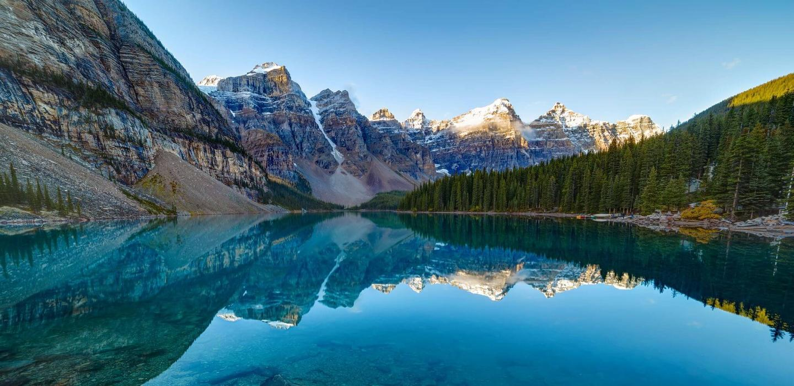
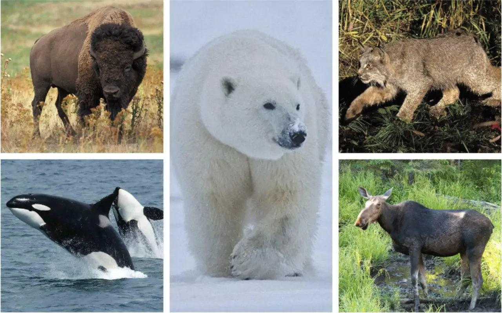
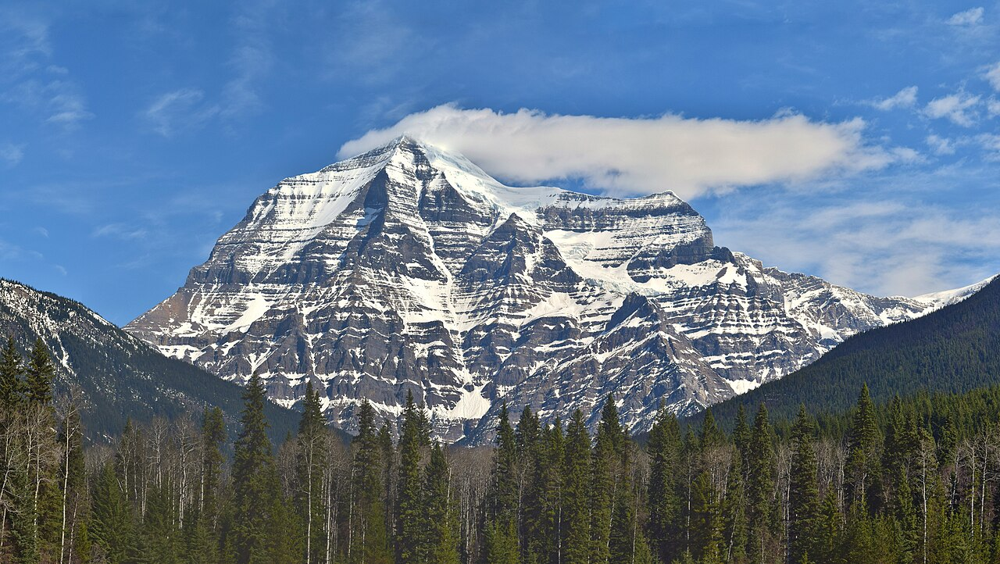
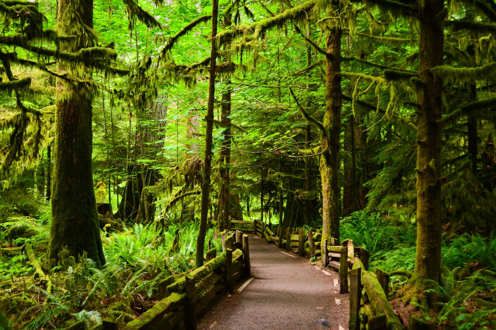

Озеро Морейн (Moraine Lake)
Одне з багатьох чудових бірюзових озер, розташованих в Альберті.
Для тих, кому цікаво почитати про дорожню подорож від Ванкувера до цього озера,
радимо вам прочитати запис одного з наших блогерів – Алени, за цим посиланням.

Тварини
Хижаки та великі ссавці:
Ведмідь гризлі, Білий ведмідь, Канадський чорний ведмідь (барибал), Вовк, Росомаха.
Копитні та олені:
Лось, Карибу (північний олень), Вівцебик.
Символи та дрібні ссавці:
Бобер канадський: Національний символ Канади. Будує греблі, змінюючи ландшафти.
Рись канадська: Хижак з китичками на вухах, що полює переважно на зайців.

Ро́бсон(англ.Mount Robson)
найвища точка Скелястих гір ; також є і найвищою точкою Канадських скелястих гір.
Часто вважається найвищою точкою Британської Колумбії, проте насправді поступається як піку Феруетер (4671 м)
у горах Святого Іллі, так і гірській вершині Уоддінгтон(4016 м)Берегового хребта.

Ліси
Ліси займають близько 46% території Канади (понад 347 млн га),
що становить близько 9% усіх світових лісів. Вони відіграють ключову роль
в екології планети та економіці країни, забезпечуючи житлом унікальну фауну та регулюючи клімат.